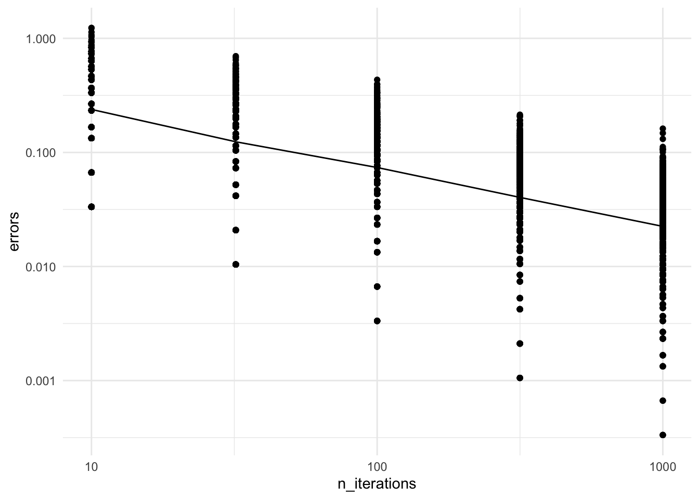

Finally, plotting the errors in log-log scale (each of the \(500 \cdot 5\) points is the error of one Monte Carlo run):
require(ggplot2)
Loading required package: ggplot2
ggplot(data=df, aes(x=n_iterations, y=errors)) +stat_summary(fun = mean, geom="line") +# Line averages over 1000 replicatesscale_x_log10() +# Show result in log-log scalescale_y_log10() +theme_minimal() +geom_point()

Good news: error goes to zero
Recall this property is known as consistency.
This confirms the theory covered on the previous page.
But here we are interested in the rate (how fast does it go to zero?)
Result suggests a linear fit in the log-log scale \(\underbrace{\log_{10}(\text{error})}_{y} = a\; \underbrace{\log_{10}(\text{number of iterations})}_{x} + b\)
Questions:
Eyeball the coefficient \(a = \Delta x / \Delta y\).
What can you this coefficient tell you about the scaling of the error?
Click for choices
\(2\)
\(1/2\)
\(1\)
\(-1/2\)
\(-2\)
Click for answer
Get \(a \approx -1/2\)
Hence taking power on each side of
\(\underbrace{\log_{10}(\text{error})}_{y} = a \underbrace{\log_{10}(\text{number of iterations})}_{x} + b\)
we get that the error will scale like \[\frac{\text{constant}}{\sqrt{\text{number of iterations}}}\]
Based on this extra information, let’s try revisit our initial question: By how much should I increase the number of iteration to get one more digit of accuracy?
Click for choices
10 times more iterations
100 times more iterations
1000 times more iterations
there is no way to answer this questions
None of the above
Click for answer
since we now know that the error will scale like \[\frac{\text{constant}}{\sqrt{\text{number of iterations}}}\]
… if we want to reduce it by factor 10 (i.e. “gain one significant digit”), we need 100x more iterations
To gain 2 more significant digits: need 10,000x more iterations, etc
What we did here is an example of an (empirical) asymptotic analysis.
Mathematical underpinnings
Notation: recall \(\hat G_M\) is the estimator. Let us denote the truth by \(g^* = \mathbb{E}[g(X, Y)]\).
Core of the argument: use that for independent random variables \(V_1, V_2\), \(\operatorname{Var}[V_1 + V_2] = \operatorname{Var}[V_1] + \operatorname{Var}[V_2]\)! This gives us:
In the following, I will explain why analyzing the standard deviation makes sense…
Surrogate error measure: Mathematically analyzing the error as we define in our code, \(\mathbb{E}|\hat G_M - g^*|\), is tricky; it is easier to look instead at the Root Mean Squared Error (RMSE): \[\operatorname{RMSE}= \sqrt{\operatorname{MSE}} = \sqrt{ \mathbb{E}[ (\hat G_M - g^*)^2 ]}.\]Sanity check: Note that the units are OK, i.e. the error measured in RMSE and with the more intuitive \(\mathbb{E}|\hat G_M - g^*|\) has the same units, e.g. meters, or grams or whatever, as the estimator \(\hat G_M\) and truth \(g^*\).
It’s enough to study the standard deviation:
Recall that the MSE is the sum of variance and bias squared (see wikipedia for proof) \[\begin{align*}
\operatorname{MSE}&= \operatorname{Var}[\hat G_M] + (\operatorname{Bias}(\hat G_M, g^*))^2 \\
\operatorname{Bias}(\hat G_M, g^*) &= (\mathbb{E}[\hat G_M] - g^*)^2.
\end{align*}\]
For simple Monte Carlo, the bias is zero by linearity of expectation:1\[\mathbb{E}[\hat G_M] = \mathbb{E}\left[\frac{1}{M} \sum_{m=1}^M G^{(m)}\right] = \frac{1}{M} \sum_{m=1}^M \mathbb{E}[G^{(m)}] = \mathbb{E}[G^{(m)}] = g^*.\]
The bias of zero gives a simpler expression for RMSE: \[\operatorname{RMSE}= \sqrt{\operatorname{Var}[\hat G_M] + 0} = \operatorname{SD}[\hat G_M]\]
Hence for simple Monte Carlo, analyzing the scaling of the standard deviation (SD) is the same as analyzing the RMSE.
Contextualizing the error rate of Monte Carlo
Numerical methods such as the trapezoidal rule converge much faster in terms of \(M\): \[\text{error} = \frac{\text{constant}}{M^2},\] i.e. 10 times more iterations gives two digits of extra accuracy (here \(M\) is the number of grid points used in a 1d numerical integral)!
So why do we use Monte Carlo?
The constants in the analysis of numerical integration blow up exponentially in the dimensionality of the problem!
Many Monte Carlo methods can avoid this exponential blow up in the dimensionality.2
And good scalability in the dimensionality of the problem often more important than scalability in number of digits of accuracy
…can’t trust 10th digit anyways because the model almost always has some amount of mis-specification.
Footnotes
For SNIS, the bias is not zero (because we have a ratio), but the squared bias decays faster than the variance term as \(M \to \infty\) so the argument is essentially the same as simple Monte Carlo.↩︎
In particular, Simple Monte Carlo and MCMC can often avoid the curse of dimensionality. But not SNIS! Why are we spending time on SNIS then? Because it can be used to approximate arbitrary posterior distribution, while simple Monte Carlo cannot, and it is much simpler than MCMC, so a good starting point pedagogically. However we will jump to MCMC later in this course.↩︎